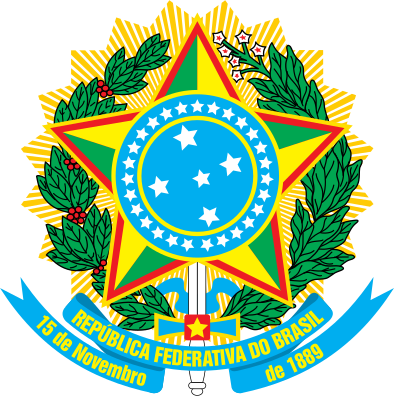
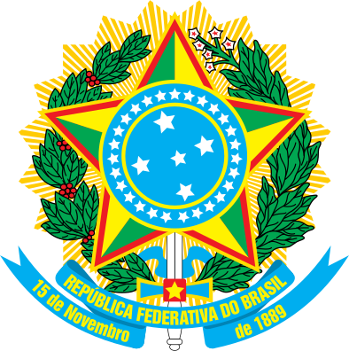

Первые люди появились на территории Бразилии, по разным теориям, между 17 тыс. и 6 тыс. лет до н. э. Уровень развития не был высоким, население Бразилии оставалось на стадии неолита. Примерно в 800 — 1400 годах нашей эры на острове Маражо существовала земледельческая культура Маражоара. В начале колонизации Бразилии Португалией на её настоящей территории коренное население составляло 7 млн человек, которые в основном вели полукочевой образ жизни. Они жили за счёт охоты, рыболовства, занимались сельским хозяйством.
Для европейцев Бразилия была открыта 24 апреля 1500 года португальским мореплавателем Педру Алварешем Кабралом. В 1533 году началась португальская колонизация Бразилии, берег которой был разделён на 15 капитанств. На протяжении следующих трёх столетий эта территория была населена португальцами и стала важным экспортёром сначала декоративных пород древесины, затем сахарного тростника, кофе и, наконец, золота. Важным источником трудовых ресурсов были рабы: сначала — индейцы, а после 1550 года — преимущественно негры. В 1549 году португальские владения в Бразилии были напрямую подчинены королю Португалии. Наместником португальского короля стал генерал-капитан, резиденция которого находилась в Салвадоре. В 1549 — 1763 годах этот город был первой столицей колониальной Бразилии. В 1574 году был принят указ, запрещающий превращение местных индейцев в рабов. Это привело к массовому завозу рабов из Африки. В 1640 году был назначен первый вице-король Бразилии маркиз де Монталван. 1763 — Столицей Бразилии становится Рио-де-Жанейро. В 1806 году португальский король Жуан VI бежал в Бразилию от Наполеона. После возвращения отца в Португалию в 1821 году его сын оставался в Бразилии регентом.
7 сентября 1822 года была провозглашена независимость Бразилии от метрополии. Императором Бразильской империи под именем Педру I и стал сын Жуана VI. Сменивший его на бразильском престоле император Педру II правил до 1889 года, когда он был свергнут военными, и Бразилия была провозглашена республикой (официальное название — «Республика Соединённых Штатов Бразилии»). За год до этого, в 1888 году, в Бразилии было отменено рабство. В конце XIX — начале XX веков Бразилия привлекла более чем 5 миллионов европейских и японских иммигрантов.
В 1930 — 1934 и в 1937 — 1945 годах — диктатуры Варгаса. В 1964 году в стране был снова совершён военный переворот, в результате которого к власти пришёл маршал Умберту Кастелу Бранку. Это был третий диктаторский режим за всю историю Бразилии. Он просуществовал до 1985 года.
Располагается в Южном и частично Северном полушариях Земли. Бразилия занимает восточную и центральную часть Южной Америки. Наибольшая протяжённость с севера на юг 4320 км, с востока на запад 4328 км. Граничит со всеми странами материка, кроме Эквадора и Чили: с Французской Гвианой, Суринамом, Гайаной, Венесуэлой на севере, Колумбией на северо-западе, Перу и Боливией на западе, Парагваем и Аргентиной на юго-западе и Уругваем на юге. Протяжённость сухопутных границ около 16 тыс. км. С востока омывается Атлантическим океаном, протяжённость береговой линии — 7,4 тыс. км. В состав Бразилии также входят несколько архипелагов, в частности Фернанду-ди-Норонья, Рокас, Сан-Паулу и Триндади-э-Мартин-Вас. Через территорию страны проходит линия экватора.

Большую часть северной Бразилии занимает водосборный бассейн реки Амазонки и её крупных притоков Токантинс, Шингу, Тапажос, Мадейра, Пурус, Журуа, Жапура и Риу-Негру. Это самая большая низменность земного шара, занимающая площадь 1,8 млн кв. км, одна из наименее населённых и наименее освоенных территорий. На западе эта низменность наиболее широкая — до 1 290 км с севера на юг, она сильно сужается у города Сантарен, где расстояние между Гвианским и Бразильским плоскогорьями составляет всего 240 км. Ниже точки впадения реки Шингу низменность снова сильно расширяется, там же начинается устье Амазонки. Реки бассейна Амазонки выносят в океан в среднем за год более 1 млрд т илисто-песчаных наносов, однако из-за тектонического понижения в приустьевой зоне река не может создать обширную дельту, и в устье образовался остров Маражо, состоящий из аллювия. Мутные жёлтые воды Амазонки прослеживаются в Атлантическом океана на расстоянии до 300 км от устья. На режим Амазонки влияют морские приливные волны, которые достигают высоты 5 м и распространяются вверх по реке на 1 400 км, заливая низкие поймы — игапó.
На основной реке и её притоках бывают наводнения, приводящие к затоплению зоны шириной до 80 км. Однако, как правило, паводки распространяются вдоль русел рек, а между ними возвышаются междуречья, покрытые деревьями или травянистой растительностью, которые никогда не затопляются. Полноводность Амазонки объясняется тем, что её северные и южные притоки находятся в разных полушариях; соответственно, паводки приходятся на разные времена года: на правых притоках — с октября по апрель (летний сезон в Южном полушарии), на левых — с апреля по октябрь (летний сезон в Северном полушарии). Соответственно, сезонные колебания стока на Амазонке сглажены. Средний годовой сток этой реки составляет примерно 7 тыс. км³ — около 15 % годового стока всех рек Земли. Амазонка судоходна на всем своём протяжении в пределах Бразилии и далее вверх по течению до города Икитос в Перу, на расстоянии 3 700 км от Атлантического океана.
Почти всю южную часть страны занимает обширное Бразильское нагорье. Там сосредоточена большая часть плодородных земель и ценнейших полезных ископаемых. Восточный край нагорья, к востоку от реки Парана, густо населён. Малонаселённые засушливые внутренние районы нагорья, включая бассейн реки Сан-Франсиску, называются сертанамы (sertão). Восточная окраина нагорья к северу от Рио-де-Жанейро имеет ступенчатое строение: крутые скалы, обращённые склонами к океану, возвышаются грядами, одна над другой. К югу от Рио-де-Жанейро уступ нагорья достигает большой высоты и производит внушительное впечатление, представая в виде массивной стены. Она называется Большим уступом, а отдельные её участки — Серра-жерал, Серра-ду-Мар , Серра-ду-Паранапиакаба т.д. Дальше вглубь страны параллельно берегу и краю уступа простирается ряд массивных горных хребтов. Самый высокий из них — Серра-да-Мантикейра та её часть Серра-ду-Капарао с вершиной Бандейра (2891 м). В пределах хребта Серра-ду-Эспиньясу в центральной части штата Минас-Жерайс сосредоточены крупнейшие в стране запасы полезных ископаемых. Гребень уступа местами прорезан долинами рек Жекитиньонья, Риу-Доси и Параиба, из них только по плоскодонные долине Риу-Доси легко проникнуть во внутренние районы страны. Долина реки Параиба тянется почти параллельно берегу океана, и к ней приурочены железная и автомобильная дороги, соединяющие города Рио-де-Жанейро и Сан-Паулу.
На юго-западе Бразильского нагорья река Парана и её притоки пересекают очень плоскую поверхность лавового плато Параны. Здесь река Парана и её приток Игуасу текут в широких неглубоких долинах, врезанных в древние субгоризонтально расположенные толщи диабазов. Эти реки падают с края плато, образуя огромные водопады Гуаира (сейчас затоплены водохранилищем плотины Итайпу) (на границе Бразилии и Парагвая), и Игуасу (на стыке границ Бразилии, Аргентины и Парагвая), которые принадлежат к наивысшим в мире.
Далее к западу в штатах Мату-Гросу, Мату-Гросу-ду-Сул и Гояс преобладают обширные плоские плато на высотах между 600 и 1200 м. Немногочисленное местное население до сих пор продолжает процесс первичного освоения территории. Основное занятие — животноводство, хотя в прошлом здесь время от времени добывались полезные ископаемые, в основном золото и алмазы. К северу от столовых плато простираются тропические леса Амазонской низменности, а на юго-западе штата Мату-Гросу-ду-Сул крутой уступ горной гряды Серра-да-Бодокена возвышается над низменностями бассейна реки Парагвай.
В Бразилии преобладают леса на красных латеритных (ферралитных) грунтах (терра роса). По запасам твёрдой древесины Бразилия занимает первое место в мире. Густые влажно-экваториальные вечнозелёные леса — гилеи или сельва, с ценными видами деревьев (свыше 4000 видов) занимают западную часть Амазонии; под ними распространены подзолистые латеритные грунты.
На востоке располагаются низменности. На невысоких холмах, которые обрамляют Гвианское и Бразильское плоскогорье, в связи с наличием засушливого сезона, распространены листопадно-вечнозелёные леса, а в грунтах процесс подзоления выражен слабее и непостоянен. Подобные типы грунтов и растительности, но с проявлением высотной поясности, характерны для восточных, наветренных и высоких холмов и массивов Бразильского плоскогорья; их западные склоны одеты преимущественно сезонно влажными лесами. Центральная часть плоскогорья занята саванной (пампа) на красных латеритных грунтах, местами с корою — кангою: наиболее распространены кустарниковые мелкодеревные саванны — кампос серрадос; вдоль рек простираются галерейные леса, в которых растёт особенно ценная восковая пальма карнауба.
На сухом северном востоке плоскогорья — полупустынное редколесье (каатинга) из ксерофитных и суккулентных деревьев и кустарников, на красно-коричневых и красно-бурых грунтах. На равномерно влажном юге снова появляются вечнозелёные лиственные и смешанные леса из хвойной бразильской араукарии с вечнозелёным лиственным подлеском (в том числе из «парагвайского чая» — йерба-мате) на краснозёмных грунтах, которые занимают возвышенные плато до юга от 24° ю. ш.; в низменностях на пористых осадочных породах с красновато-чёрными грунтами распространены бездеревные травянистые саванны — кампос лимпос. В Пантанал значительная площадь под болотами.
Высокое разнообразие фауны, имеющее место в Бразилии, может быть объяснено значительными размерами страны, а также большой вариацией типов её экосистем. Данные о разнообразии фауны сильно зависят от источника, как из-за того, что даже таксономисты иногда расходятся во мнениях относительно классификации видов, так и из-за недостатка данных и иногда неполной или устаревшей информации. Постоянно выявляются новые виды, а другие продолжают вымирать.
Бразилия имеет наибольшее число видов приматов среди всех стран, около 77 видов, наибольшее число видов пресноводных рыб (более 3000 видов). Она занимает второе место по числу видов земноводных, третье по числу видов птиц, и пятое по числу видов пресмыкающихся. Многие из видов находятся под угрозой, особенно те, которые живут в экосистемах, что сейчас в значительной мере уничтожены, таких как атлантический лес.
.jpg)

Климат Бразилии менее разнообразен, чем её рельеф. Хотя Бразилия — тропическая страна, в ней мало районов, неблагоприятных для постоянного проживания — слишком жарких, слишком влажных или с одинаковыми температурами.
В пределах Амазонской низменности среднее годовое количество осадков — 1800—2300 мм, они выпадают преимущественно в виде ливней, характерна постоянная высокая влажность воздуха. Однако здесь не бывает жары. Например, в Сантарене, расположенном чуть южнее экватора, максимальная зарегистрированная температура 36°С, а минимальная 18°С. Зимой холодные воздушные массы (фриажен) временами проникают в Амазонский бассейн с юга, принося с собой прохладную погоду с ливнями.
Наиболее засушливые — крайние северо-восточные районы Бразилии, получившие название каатинга. Там выпадает меньше всего осадков (в среднем 500—650 мм в год). Кроме того, режим осадков резко различается по годам. Так, например, в период 1835—1935 годов более половины лет регистрировались экстремальные отклонения в обе стороны от указанного диапазона. Обработку земель в таких условиях ставит фермеров на грань банкротства, поскольку посевы часто страдают от избыточного или недостаточного увлажнения.
Вдоль Атлантического прибрежной равнины и Большого уступа преобладает тропический влажный климат. На побережье возле Салвадор круглый год держатся высокие температуры и выпадают обильные осадки, но далее к югу зимы становятся холоднее и несколько суше, хотя летние периоды остаются жаркими и влажными. В Рио-де-Жанейро средняя температура самого тёплого месяца (февраля) — 26°С, а самого холодного (июля) — 20°С. Европейцам и североамериканцам нелегко переносить такой климат не столько из-за жары, сколько из-за высокой относительной влажности в прибрежных районах (особенно в январе).
На бразильском нагорье лето тёплое и влажное, а зимы прохладные и сухие. В целом здесь температуры не столь высоки, как в прибрежных районах и в Амазонии, а осадки выпадают в форме ливней только на больших высотах. В горах близ Большого уступа средние годовые суммы осадков превышают 1800 мм, сезонные колебания температур более резкие: летом до начала влажного сезона до 38°С (при средних значениях 28—30°С), средние зимние температуры составляют 19—26°С в зависимости от расстояния до экватора. Выделяется сухой летний сезон продолжительностью от 1 до 5 месяцев, когда выпадает менее 50 мм осадков. В этот период деревья сбрасывают листья, а травы становятся жёсткими и теряют кормовые качества.
На больших высотах, особенно в штате Сан-Паулу и в южных штатах Бразилии, средние температуры не превышают 14—18°С, часты заморозки. Некоторое время в горах выпадает снег, но держится он недолго. Вторжение холодного воздуха, подобные тем, которые бывают в США и Европе, никогда не наблюдаются на юге Бразилии, потому что антарктические воздушные массы значительно прогреваются при прохождении над тёплыми прибрежными водами. Однако зимой при проникновении полярных воздушных масс бывают длительные периоды облачной и дождливой погоды.
Данные по климату Бразилиа:
| Показатель | Янв. | Фев. | Март | Апр. | Май | Июнь | Июль | Авг. | Сен. | Окт. | Нояб. | Дек. | Год |
|---|---|---|---|---|---|---|---|---|---|---|---|---|---|
| Абсолютный максимум, °C | 39,9 | 39,9 | 39,9 | 39,9 | 39,9 | 39,9 | 39,9 | 38,5 | 39,9 | 39,9 | 39,9 | 39,9 | 39,9 |
| Средний максимум, °C | 26,9 | 26,7 | 27,1 | 26,6 | 25,7 | 25,2 | 25,1 | 27,3 | 28,3 | 27,5 | 26,6 | 26,2 | 26,6 |
| Средняя температура, °C | 21,9 | 22,0 | 21,9 | 21,6 | 20,4 | 19,2 | 19,1 | 20,7 | 22,5 | 22,7 | 21,8 | 21,5 | 21,3 |
| Средний минимум, °C | 17,4 | 17,4 | 17,5 | 16,8 | 15,0 | 13,3 | 12,9 | 14,6 | 16,0 | 17,4 | 17,5 | 17,5 | 16,1 |
| Абсолютный минимум, °C | 10,1 | 10,1 | 10,1 | 10,1 | 5,1 | 0,1 | 0,1 | 5,1 | 5,1 | 10,1 | 10,1 | 10,1 | 0,1 |
| Норма осадков, мм | 199 | 167 | 198 | 122 | 37 | 5 | 6 | 20 | 45 | 123 | 204 | 227 | 1352 |
Минеральные ресурсы Бразилии представлены полезными ископаемыми более 40 видов.
Наиболее значимые из них марганцевая и железная руды. Из 200 млн. тонн добываемой железной руды за год примерно 80% идет на экспорт.
На одном из первых мест находится страна по добыче бокситов. Есть в недрах Бразилии медь, цинк, никель которые используются для потребностей внутреннего рынка.
Из стратегического сырья добывается ниобий, вольфрам, слюда, цирконий.
Обеспечить себя нефтью Бразилия может только наполовину, а её годовая потребность 75 млн. тонн, поэтому нефть импортируется.
Большие запасы золота были обнаружены в 1970-е годы в Амазонии, ежегодная добыча которого составляет 80 тонн.
Угольные месторождения имеют низкое качество, и его годовая добыча составляет 5 млн. тонн.
Водные ресурсы Бразилии представлены крупными реками – Амазонкой, Параной, Уругваем, Парагваем, Сан-Франциску.
Из всех этих рек полноводны в течение всего года только Амазонка и её западные и восточные притоки.
Реки Бразильского плоскогорья имеют большие колебания расхода воды и паводки. Реки плоскогорья судоходны на отдельных коротких участках, но зато несут в себе значительные запасы гидроэнергии.
На большей части Бразилии образовались красные ферраллитные почвы.
Богатый видовой состав характерен для бразильской сельвы в западной части Амазонии. Леса этой территории растут на красно-желтых ферраллитных почвах. Если вырубить этот лес, то почва быстро потеряет свою структуру и плодородие.
Растительность бразильской саванны, которая здесь носит название кампос, формируется на красных грубозернистых почвах.
Красновато-черные почвы образовались в пределах бездревесных травянистых саванн (прерии).
Маломощные, щебнистые красно-коричневые и красно-бурые почвы характерны для самых засушливых частей страны – это внутренние районы северо-восточной части Бразильского плоскогорья.
Бразилия разделяется на 26 штатов и 1 федеральный (столичный) округ.
- Акри
- Алагоас
- Амазонас
- Амапа
- Баия
- Гояс
- Мараньян
- Мату-Гросу
- Мату-Гросу-ду-Сул
- Минас-Жерайс
- Пара
- Параиба
- Парана
- Пернамбуку
- Пиауи
- Рио-де-Жанейро
- Риу-Гранди-ду-Норти
- Риу-Гранди-ду-Сул
- Рондония
- Рорайма
- Санта-Катарина
- Сан-Паулу
- Сеара
- Сержипи
- Токантинс
- Эспириту-Санту
Кроме этого, существует более крупное деление страны — на регионы: Северный регион, Северо-восточный регион, Центрально-западный регион, Юго-восточный регион, Южный регион.
Бразилия организована по федеральной модели, штаты Бразилии имеют значительную автономию правительства, законотворческой деятельности, общественной безопасности и налогообложения. Правительство штата или федерального округа возглавляет губернатор, избранный прямым голосованием; каждый штат имеет своё законодательное собрание (Assembleia legislativa), законодательный орган столичного округа — Законодательная Палата (Câmara Legislativa).
Каждый штат делится на муниципалитеты, каждый со своим собственным законодательным советом и мэром, автономные и иерархически независимые ни от федерального правительства, ни от правительства штата. Многие муниципалитеты в свою очередь делятся на округа, которые не имеют политической или административной автономии. Группа нескольких муниципалитетов имеет название муниципального района — Comarca.
_-_ru_-_colored.svg)
По данным ООН, Бразилия относится к группе новых индустриальных стран. По объему ВВП — 375 млрд. долл. Бразилия занимает 10-е место в мире. На долю промышленности в ВВП приходится 43%, а на сельское хозяйство — 10%. Индустриальный рост, особенно интенсивный в 70-80-е года XX века, стал скачком Бразилии. Ее развитию способствовали: иммиграция, давшая квалифицированную рабочую силу; кофейный бум, создавший условия для первоначального накопления капитала; освоение гидроресурсов, ставших энергетической основой индустриализации; политика «открытых дверей» для международных монополий; льготы, предоставленные предпринимателям, прямые иностранные инвестиции и займы, кредиты в экономику Бразилии составили в 1998 г.
В конце 80-х годов на смену крупным проектам строительства пришли проекты создания небольших предприятий и развития мелкой и средней промышленности. В результате в Бразилии приобрели значение наукоемкие отрасли промышленности. Страна достигла больших успехов в электронике, информатике, в производстве компьютерной техники. Такие отрасли, как электроника, авиастроение, металлургия, нефтехимия имеют новейшую технологию. В Бразилии ведутся исследования в области биотехнологии.
На основе новой технологии модернизированы традиционные отрасли, созданы крупные агропромышленные комплексы. Площадь обрабатываемых земель составляет более 50 млн. га. Страна лидирует в мировом производстве кофе — 2,5 млн. тонн (из 6 млн. тонн, производимого в мире), занимает одно из первых мест по производству какао-бобов, ананасов, апельсинов, бананов; входит в число ведущих мировых производителей сахарного тростника и хлопка. Бразилия стала вторым по значению (после США) производителем сои. По сбору сизаля Бразилия занимает второе место после Танзании. Пять экспортных культур: кофе, какао-бобы, хлопчатник, сахарный тростник и соя занимают 32% посевных площадей и дают 37% стоимости продукции растениеводства. Главные зерновые культуры Бразилии: рис, кукуруза, фасоль, маниок, пшеница, ячмень, овес.
Бразилия специализируется на выращивании винограда, табака. В лесном хозяйстве большое значение имеет сбор (до 50 тыс. тонн) дикорастущего каучука в лесах Амазонии, кар-ноубского воска, бразильского ореха, плодов пальмы бабасу и масличной пальмы — ойтисики, «парагвайского чая» и заготовка древесины.
Тем не менее отраслевая структура хозяйства Бразилии еще недостаточно совершенна. Наблюдаются большие региональные различия между наиболее экономически развитым районом страны — Юго-Востоком и остальными районами в уровне экономического развития, в национальном доходе, в социальной инфраструктуре, в уровне образования и питания населения.